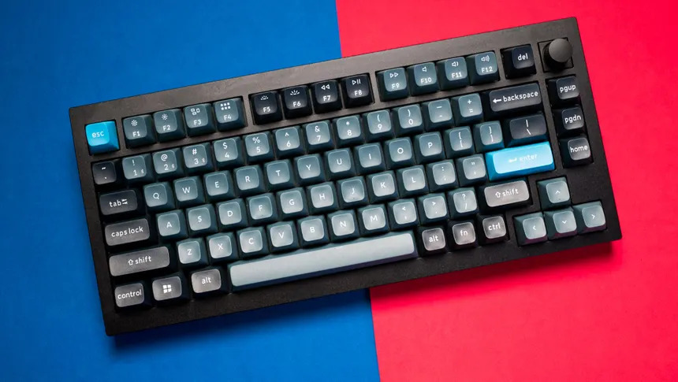

Tienda de Teclados Mecánicos
Nuestros modelos destacados
Bienvenido a nuestra tienda. Seleccionamos componentes de alta calidad y switches lubricados a mano para ofrecer la mejor experiencia de escritura.

Lista de Modelos Disponibles
- Keychron Q1 Pro - Conexión inalámbrica y chasis de aluminio.
- Akko 3068B Plus - Formato compacto 65% con switches táctiles.
- GMMK Pro - Placa Gasket mount y selector giratorio de volumen.
- Wooting 60HE v2 - Chasis de aluminio y teclas PBT duraderas
Consulta la fuente de datos XML del inventario o visita la
Web oficial del fabricante.